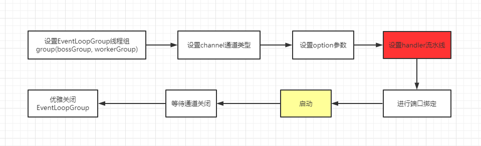
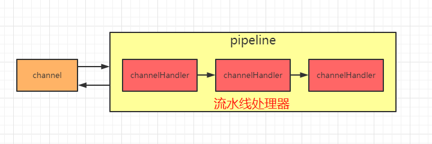
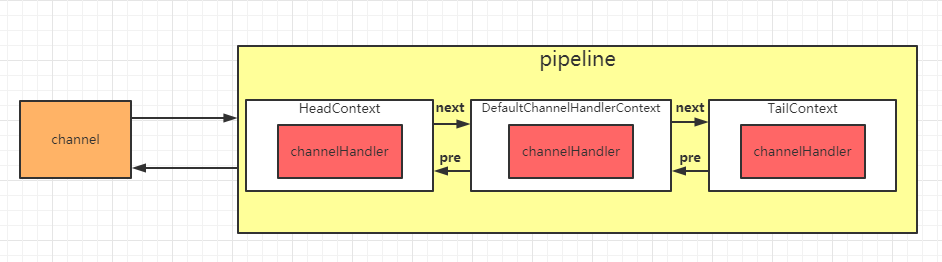

超详细Netty入门
本文最后更新于：2022年10月9日 下午
简介： 本文主要讲述Netty框架的一些特性以及重要组件，希望看完之后能对Netty框架有一个比较直观的感受，希望能帮助读者快速入门Netty，减少一些弯路。
思维导图
前言
本文主要讲述Netty框架的一些特性以及重要组件，希望看完之后能对Netty框架有一个比较直观的感受，希望能帮助读者快速入门Netty，减少一些弯路。
一、Netty概述
官方的介绍：
Netty is an asynchronous event-driven network application framework
for rapid development of maintainable high performance protocol servers & clients.
Netty是 一个异步事件驱动的网络应用程序框架，用于快速开发可维护的高性能协议服务器和客户端。
二、为什么使用Netty
从官网上介绍，Netty是一个网络应用程序框架，开发服务器和客户端。也就是用于网络编程的一个框架。既然是网络编程，Socket就不谈了，为什么不用NIO呢？
2.1 NIO的缺点
对于这个问题，之前我写了一篇文章《NIO入门》对NIO有比较详细的介绍，NIO的主要问题是：
- NIO的类库和API繁杂，学习成本高，你需要熟练掌握Selector、ServerSocketChannel、SocketChannel、ByteBuffer等。
- 需要熟悉Java多线程编程。这是因为NIO编程涉及到Reactor模式，你必须对多线程和网络编程非常熟悉，才能写出高质量的NIO程序。
- 臭名昭著的epoll bug。它会导致Selector空轮询，最终导致CPU 100%。直到JDK1.7版本依然没得到根本性的解决。
2.2 Netty的优点
相对地，Netty的优点有很多：
- API使用简单，学习成本低。
- 功能强大，内置了多种解码编码器，支持多种协议。
- 性能高，对比其他主流的NIO框架，Netty的性能最优。
- 社区活跃，发现BUG会及时修复，迭代版本周期短，不断加入新的功能。
- Dubbo、Elasticsearch都采用了Netty，质量得到验证。
三、架构图
上面这张图就是在官网首页的架构图，我们从上到下分析一下。
绿色的部分Core核心模块，包括零拷贝、API库、可扩展的事件模型。
橙色部分Protocol Support协议支持，包括Http协议、webSocket、SSL(安全套接字协议)、谷歌Protobuf协议、zlib/gzip压缩与解压缩、Large File Transfer大文件传输等等。
红色的部分Transport Services传输服务，包括Socket、Datagram、Http Tunnel等等。
以上可看出Netty的功能、协议、传输方式都比较全，比较强大。
四、永远的Hello Word
首先搭建一个HelloWord工程，先熟悉一下API，还有为后面的学习做铺垫。以下面这张图为依据：
4.1 引入Maven依赖
使用的版本是4.1.20，相对比较稳定的一个版本。
1 | |
4.2 创建服务端启动类
1 | |
4.3 创建服务端处理器
1 | |
4.4 创建客户端启动类
1 | |
4.5 创建客户端处理器
1 | |
4.6 测试
先启动服务端，再启动客户端，就可以看到结果：
MyServer打印结果:
MyClient打印结果：
五、Netty的特性与重要组件
===============
5.1 taskQueue任务队列
如果Handler处理器有一些长时间的业务处理，可以交给taskQueue异步处理。怎么用呢，请看代码演示：
1 | |
我们打一个debug调试，是可以看到添加进去的taskQueue有一个任务。
5.2 scheduleTaskQueue延时任务队列
延时任务队列和上面介绍的任务队列非常相似，只是多了一个可延迟一定时间再执行的设置，请看代码演示：
1 | |
依然打开debug进行调试查看，我们可以有一个scheduleTaskQueue任务待执行中
5.3 Future异步机制
在搭建HelloWord工程的时候，我们看到有一行这样的代码：
1 | |
很多操作都返回这个ChannelFuture对象，究竟这个ChannelFuture对象是用来做什么的呢？
ChannelFuture提供操作完成时一种异步通知的方式。一般在Socket编程中，等待响应结果都是同步阻塞的，而Netty则不会造成阻塞，因为ChannelFuture是采取类似观察者模式的形式进行获取结果。请看一段代码演示：
1 | |
5.4 Bootstrap与ServerBootStrap
Bootstrap和ServerBootStrap是Netty提供的一个创建客户端和服务端启动器的工厂类，使用这个工厂类非常便利地创建启动类，根据上面的一些例子，其实也看得出来能大大地减少了开发的难度。首先看一个类图：
可以看出都是继承于AbstractBootStrap抽象类，所以大致上的配置方法都相同。
一般来说，使用Bootstrap创建启动器的步骤可分为以下几步：

5.4.1 group()
在上一篇文章《Reactor模式》中，我们就讲过服务端要使用两个线程组：
- bossGroup 用于监听客户端连接，专门负责与客户端创建连接，并把连接注册到workerGroup的Selector中。
- workerGroup用于处理每一个连接发生的读写事件。
一般创建线程组直接使用以下new就完事了：
1 | |
有点好奇的是，既然是线程组，那线程数默认是多少呢？深入源码：
1 | |
通过源码可以看到，默认的线程数是cpu核数的两倍。假设想自定义线程数，可以使用有参构造器：
1 | |
5.4.2 channel()
这个方法用于设置通道类型，当建立连接后，会根据这个设置创建对应的Channel实例。
使用debug模式可以看到
通道类型有以下：
NioSocketChannel： 异步非阻塞的客户端 TCP Socket 连接。
NioServerSocketChannel： 异步非阻塞的服务器端 TCP Socket 连接。
常用的就是这两个通道类型，因为是异步非阻塞的。所以是首选。
OioSocketChannel： 同步阻塞的客户端 TCP Socket 连接。
OioServerSocketChannel： 同步阻塞的服务器端 TCP Socket 连接。
稍微在本地调试过，用起来和Nio有一些不同，是阻塞的，所以API调用也不一样。因为是阻塞的IO，几乎没什么人会选择使用Oio，所以也很难找到例子。我稍微琢磨了一下，经过几次报错之后，总算调通了。代码如下：
1 | |
NioSctpChannel： 异步的客户端 Sctp（Stream Control Transmission Protocol，流控制传输协议）连接。
NioSctpServerChannel： 异步的 Sctp 服务器端连接。
本地没启动成功，网上看了一些网友的评论，说是只能在linux环境下才可以启动。从报错信息看：SCTP not supported on this platform，不支持这个平台。因为我电脑是window系统，所以网友说的有点道理。
5.4.3 option()与childOption()
首先说一下这两个的区别。
option()设置的是服务端用于接收进来的连接，也就是boosGroup线程。
childOption()是提供给父管道接收到的连接，也就是workerGroup线程。
搞清楚了之后，我们看一下常用的一些设置有哪些：
SocketChannel参数，也就是childOption()常用的参数：
SO_RCVBUF Socket参数，TCP数据接收缓冲区大小。
TCP_NODELAY TCP参数，立即发送数据，默认值为Ture。
SO_KEEPALIVE Socket参数，连接保活，默认值为False。启用该功能时，TCP会主动探测空闲连接的有效性。
ServerSocketChannel参数，也就是option()常用参数：
SO_BACKLOG Socket参数，服务端接受连接的队列长度，如果队列已满，客户端连接将被拒绝。默认值，Windows为200，其他为128。
由于篇幅限制，其他就不列举了，大家可以去网上找资料看看，了解一下。
5.4.4 设置流水线(重点)
ChannelPipeline是Netty处理请求的责任链，ChannelHandler则是具体处理请求的处理器。实际上每一个channel都有一个处理器的流水线。
在Bootstrap中childHandler()方法需要初始化通道，实例化一个ChannelInitializer，这时候需要重写initChannel()初始化通道的方法，装配流水线就是在这个地方进行。代码演示如下：
1 | |
处理器Handler主要分为两种：
ChannelInboundHandlerAdapter(入站处理器)、ChannelOutboundHandler(出站处理器)
入站指的是数据从底层java NIO Channel到Netty的Channel。
出站指的是通过Netty的Channel来操作底层的java NIO Channel。
ChannelInboundHandlerAdapter处理器常用的事件有：
- 注册事件 fireChannelRegistered。
- 连接建立事件 fireChannelActive。
- 读事件和读完成事件 fireChannelRead、fireChannelReadComplete。
- 异常通知事件 fireExceptionCaught。
- 用户自定义事件 fireUserEventTriggered。
- Channel 可写状态变化事件 fireChannelWritabilityChanged。
- 连接关闭事件 fireChannelInactive。
ChannelOutboundHandler处理器常用的事件有：
- 端口绑定 bind。
- 连接服务端 connect。
- 写事件 write。
- 刷新时间 flush。
- 读事件 read。
- 主动断开连接 disconnect。
- 关闭 channel 事件 close。
还有一个类似的handler()，主要用于装配parent通道，也就是bossGroup线程。一般情况下，都用不上这个方法。
5.4.5 bind()
提供用于服务端或者客户端绑定服务器地址和端口号，默认是异步启动。如果加上sync()方法则是同步。
有五个同名的重载方法，作用都是用于绑定地址端口号。不一一介绍了。
5.4.6 优雅地关闭EventLoopGroup
1 | |
会关闭所有的child Channel。关闭之后，释放掉底层的资源。
5.5 Channel
Channel是什么？不妨看一下官方文档的说明：
A nexus to a network socket or a component which is capable of I/O operations such as read, write, connect, and bind
翻译大意：一种连接到网络套接字或能进行读、写、连接和绑定等I/O操作的组件。
如果上面这段说明比较抽象，下面还有一段说明：
A channel provides a user:
the current state of the channel (e.g. is it open? is it connected?),
the configuration parameters of the channel (e.g. receive buffer size),
the I/O operations that the channel supports (e.g. read, write, connect, and bind), and
the ChannelPipeline which handles all I/O events and requests associated with the channel.
翻译大意：
channel为用户提供：
- 通道当前的状态（例如它是打开？还是已连接？）
- channel的配置参数（例如接收缓冲区的大小）
- channel支持的IO操作（例如读、写、连接和绑定），以及处理与channel相关联的所有IO事件和请求的ChannelPipeline。
5.5.1 获取channel的状态
1 | |
以上就是获取channel的四种状态的方法。
5.5.2 获取channel的配置参数
获取单条配置信息，使用getOption()，代码演示：
1 | |
获取多条配置信息，使用getOptions()，代码演示：
1 | |
5.5.3 channel支持的IO操作
写操作，这里演示从服务端写消息发送到客户端：
1 | |
客户端控制台：
//收到服务端/127.0.0.1:6666的消息：这波啊，这波是肉蛋葱鸡~
连接操作，代码演示：
ChannelFuture connect = channelFuture.channel().connect(new InetSocketAddress("127.0.0.1", 6666));//一般使用启动器，这种方式不常用
通过channel获取ChannelPipeline，并做相关的处理：
//获取ChannelPipeline对象
ChannelPipeline pipeline = ctx.channel().pipeline();
//往pipeline中添加ChannelHandler处理器，装配流水线
pipeline.addLast(new MyServerHandler());
5.6 Selector
在NioEventLoop中，有一个成员变量selector，这是nio包的Selector，在之前《NIO入门》中，我已经讲过Selector了。
Netty中的Selector也和NIO的Selector是一样的，就是用于监听事件，管理注册到Selector中的channel，实现多路复用器。
5.7 PiPeline与ChannelPipeline
在前面介绍Channel时，我们知道可以在channel中装配ChannelHandler流水线处理器，那一个channel不可能只有一个channelHandler处理器，肯定是有很多的，既然是很多channelHandler在一个流水线工作，肯定是有顺序的。
于是pipeline就出现了，pipeline相当于处理器的容器。初始化channel时，把channelHandler按顺序装在pipeline中，就可以实现按序执行channelHandler了。

在一个Channel中，只有一个ChannelPipeline。该pipeline在Channel被创建的时候创建。ChannelPipeline包含了一个ChannelHander形成的列表，且所有ChannelHandler都会注册到ChannelPipeline中。
5.8 ChannelHandlerContext
在Netty中，Handler处理器是有我们定义的，上面讲过通过集成入站处理器或者出站处理器实现。这时如果我们想在Handler中获取pipeline对象，或者channel对象，怎么获取呢。
于是Netty设计了这个ChannelHandlerContext上下文对象，就可以拿到channel、pipeline等对象，就可以进行读写等操作。
通过类图，ChannelHandlerContext是一个接口，下面有三个实现类。
实际上ChannelHandlerContext在pipeline中是一个链表的形式。看一段源码就明白了：
1 | |
下面我用一张图来表示，会更加清晰一点：

5.9 EventLoopGroup
我们先看一下EventLoopGroup的类图：
其中包括了常用的实现类NioEventLoopGroup。OioEventLoopGroup在前面的例子中也有使用过。
从Netty的架构图中，可以知道服务器是需要两个线程组进行配合工作的，而这个线程组的接口就是EventLoopGroup。
每个EventLoopGroup里包括一个或多个EventLoop，每个EventLoop中维护一个Selector实例。
5.9.1 轮询机制的实现原理
我们不妨看一段DefaultEventExecutorChooserFactory的源码：
1 | |
这段代码可以确定执行的方式是轮询机制，接下来debug调试一下：
它这里还有一个判断，如果线程数不是2的N次方，则采用取模算法实现。
1 | |